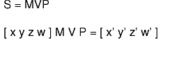
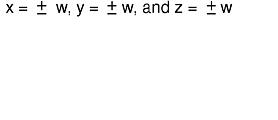
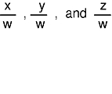

A transformation changes the size and orientation of an object by modifying either the object itself or the position of the viewpoint. A transformation is expressed as a 4x4 floating-point matrix. You can build complex transformations by linking a series of primitive transformation subroutines, such as rotate, rot, translate, or scale. If M,V, and P are modeling, viewing, and projection transformations, you can formulate transformation S, which maps model space into normalized device coordinates (NDC), as in the following equation:
 The resulting NDC coordinates:
are then scaled to the current viewport with the current viewport mapping.
The graphics pipeline maintains a stack that holds up to 32 transformation matrices. The system applies the matrix on top of the stack (the current transformation matrix) to all coordinate data.
The graphics pipeline forms a complex transformation matrix by premultiplying the current matrix by each primitive transformation. The pipeline forms transformation S by executing coordinate transformation subroutines in reverse order: first, projection subroutines; second, viewing subroutines; and third, modeling subroutines.
Note: In MSINGLE matrix mode, the graphics pipeline loads the P transformation onto the matrix stack, while both the V and M transformations premultiply the current matrix. For additional information on matrix manipulation and the graphics pipeline, refer to "Lighting in Matrix Mode".
The projection, viewing, and modeling subroutines provide a high-level interface that manages the transformation matrix stack. Additional subroutines allow direct control over the stack. These subroutines load or multiply user-defined transformation matrices, push and pop the transformation stack, and retrieve the matrix on the top of the stack.
The loadmatrix subroutine loads a 4x4 floating-point matrix onto the stack, replacing the current top of the stack. The syntax is as follows:
void loadmatrix(Matrix matrix)
The multmatrix subroutine premultiplies the current top of the transformation stack by the given matrix. That is, if T is the current matrix, multmatrix(M) replaces T with MT. The syntax is as follows:
void multmatrix(Matrix matrix)
The getmatrix subroutine copies the transformation matrix from the top of the transformation stack to an array provided by the user. The stack does not change. If lighting is not being used (the default case), the product MVP of the modeling, viewing, and projection matrices is kept on the stack. The syntax is as follows:
void getmatrix(Matrix matrix)
When lighting is being used, the projection matrix P is kept separately, and only the product of the modeling and viewing matrices, MV, is kept on the stack. A special mechanism, the matrix mode, is provided for accessing P and MV separately. Otherwise, the matrix subroutines work as previously described.
Specifying or defining the ortho2 subroutine parameters brings up the issue of creating a window that has a one-to-one mapping between screen space (viewport) and world space (in this case, ortho2). Consider the following example.
Assume a window that is four pixels wide by six pixels high. This window runs from coordinates 0 to 3 on the X-axis and from 0 to 5 on the Y-axis. In order to set up a mapping between world space (floating-point coordinates) and screen space (integer coordinates) that makes pixel (1,2) centered exactly at the point (1.0, 2.0) in the ortho2 world space, you must call the following subroutines:
viewport(0, 3, 0, 5); ortho2(-0.5, 3.5, -0.5, 5.5);
To understand why these values are correct, consider the X component. The width in X of this window is 4 pixels, which are integer values; it makes no sense to talk about pixel 1.3. In world coordinates, however, an X location of 1.3 is valid. The mapping from world to screen coordinates attempts to convert the X world coordinate 1.3 to the nearest whole-number pixel box it can find. Rounding off 1.3 points GL at pixel 1.
The call to the ortho2 subroutine runs between x values of 0.5 and 3.5 in order to let the rounding operation center the four x world-space whole-number values of 0.0, 1.0, 2.0, and 3.0 in the middle of each pixel in the X dimension.
In this scheme, -0.5 can be thought of as the extreme left-hand edge of the window, while 3.5 is the extreme right-hand edge, 1.5 is the boundary between pixel 1 and pixel 2, and so on. This lets you define the x range in the ortho2 subroutine so that, in effect, the world coordinates straddle the discrete whole number boundaries and center the whole numbers (0.0, 1.0, 2.0, 3.0) in the middle of each pixel (0, 1, 2, 3).
Extrapolate from this and assume a situation where the window has been resized and you need to redefine a current ortho2 subroutine based on the new size. To do this, use the following three statements:
getsize(&xsize, &ysize); viewport(0, xsize - 1, 0, ysize - 1); ortho2 (-0.5,(float)(xsize-0.5), -0.5,(float)(ysize-0.5);
In the call to the viewport subroutine, you must subtract 1 from the value of xsize and ysize because they start at zero, not one. Likewise, in the call to the ortho2 subroutine, you need to start at 0.5; therefore, you need to subtract 0.5 from xsize and ysize to create the straddling effect described previously.